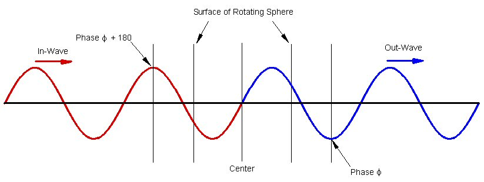

I am trying to figure out what the difference between a particle and anti-particle is according to Milo Wolff's Wave Strucutre of Matter model. I don't have it all worked out. So, if you would like to help me understand, so that I can do some graphs to show the difference (which will help everyone else "see it" quickly) please feel free to contribute. My e-mail address is provided at the bottom of this page.
In the paper "The Physical Origin of Electron Spin - using quantum wave particle structure" MW writes: "The required phase shift is a 180° rotation that changes inward wave amplitudes to become those of the outward wave. There are only two possible directions of rotation, CW or CCW. One choice is an electron with spin of +h/4pi, and the other is the positron with spin of -h/4pi."
I don't understand the "CW" and "CCW" aspect mentioned. And I have shown that the spherical rotation is the same regardless of changing one aspect from being "CW" to become "CCW". See my web page on "Cw" and "CCW" w.r.t. Spherical Rotations.
However, I think I understand the above comment about a 180° phase shift. This is explored below.
In the paper "Beyond the Point Particle - A Wave Structure for the Electron" (Reprinted from: Galilean Electrodynamics 6, No. 5, October 1995, pages 83-91) MW writes: "1. There are two kinds of SR electrons as a result of two ways to superimpose the IN and OUT waves. One combination has a negative IN-wave amplitude at the center and corresponds to the electron. The other has a negative OUT-wave at the center forming an anti-resonance which is the positron."
I don't understand these comments about the amplitudes at the center of the particle. Because the particles are nothing but the space/medium and traveling waves in the medium, the amplitude at the center (and any place else) would oscillate making it impossible to distinguish a negative amplitude at the center of a particle from a positive amplitude at the center of a particle. Unless there is some Universe clock that all waves and particles are synchronized to. That is, such that if you know that the amplitude at the center of one electron is positive, say, at a particular "time" then you know that all electrons have a positive amplitude and also that all positrons (anti-electrons) have a negative amplitude at that particular "time". Everywhere.
One approach would be to simply say that the electron, for example, is a "black box" (or "black sphere") into which you put a traveling wave and out comes the traveling wave at the other side such that it's phase has shifted by 180°.
Figure 1
This, of course, is not very satisfying. I want to know how this is accomplished!
One way to accomplish this black box function is to make the box 3 half-wavelengths in length.
Figure 2
This picture implies that the space/medium of the electron is uniform. This is not the case in the WSM model. There is a Spherical Rotation motion of the space/medium involved.
As we follow along a radial line through the Spherical Rotation, we pass through 3 zones: 1) From outside to inside, 2) Through the inside, 3) From inside to outside. By confining (requiring another assumption to be added to WSM model?) a 1/2-wavelength to each of these 3 zones we accomplish the 180° phase shift. The Spherical Rotation of the space/medium provides a mechanism for changing it's "index of refraction" such that as the wave passes through it, it shifts the wave's length. This is shown in the figures as "A" and "B" as well as "D" and "E". In these part the wave length is shortened. (I don't know if the wave lengths are shortened or lengthened. I simply picked one option to be able to distinguish the "boundary" of the particle in the follwoing figures.)
Figure 3
And with the other in-wave from the right...
Figure 4
The sum of these waves result in a standing wave pattern.
Note that the amplitude at the center is oscillating. (Black is the sum of the two traveling waves.)
Figure 5
What the WSM model requires for the anti-particle is to have the center oscillation of the standing wave to be 180° out of phase with this particle standing wave oscillation. Then, if we were to place the anti-particle on top of the particle, the total oscillation would be zero everywhere.
Figure 6
The top animation in the figure shows the particle while the bottom part of the figure shows the anti_particle.
An alternative construction would divide the "particle" into halves instead of into thirds. This construction would then require 3/4ths of a wave length into the "particle" and 3/4ths of a wave length going out of the particle. This produces the required 180° phase difference between the in-wave and the out-wave.

Figure 7
Note, again, that this requires a Universal Synchronization assumption (USA) of all particles and anti-particles.
Also note that we are now required to have a whole number of wavelengths between all particles and 1/2-wavelengths between all anti-particles. Anti-particles must maintain a whole number of wavelengths between them.
This is because on the direct line from one particle to another there are shared traveling waves. The out-wave of particle #1 is the in-wave of particle #2 along the direct line between the two particles. And if the two particles are not positioned "correctly" in terms of wave length of these shared traveling waves, the phase at the center of one of the particles could be "wrong" thus changing it into an anti-particle.
If this in not correct for the WSM model, please, someone, let me know. (And hopefully, explain it correctly to me!!)
As the particles move about, they must maintain this relation of whole and half wavelengths.
It should be pointed out that the wavelengths can change as the sapce/medium changes.
Usage Note: My work is copyrighted. You may reference and use my work in non-profit projects but you may not include my work, or parts of it, in any for-profit project without my consent.